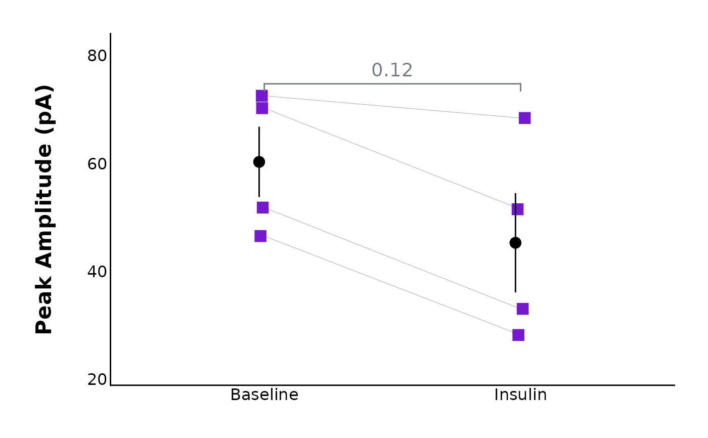

Plot and compare action potential parameters before and after a treatment
Source:R/Plot-data.R
plot_AP_comparison.RdThis function produces a connected line plot which allows you to visually compare action potential parameters such as peak amplitude, after-hyperpolarization amplitude (here, antipeak_amplitude), half-width, etc. before and after a treatment has been applied. It requires action potential data from two recordings - one taken during the baseline (state = "Baseline") and one taken after a hormone or high-frequency protocol has been applied (in this example, state = "Insulin").
Usage
plot_AP_comparison(
data,
plot_treatment = "Control",
plot_category = 2,
included_sexes = "both",
facet_by_sex = "no",
male_label = "Male",
female_label = "Female",
left_sex = "Female",
baseline_label = "Baseline",
post_hormone_label = "Post-hormone",
y_variable,
y_axis_title,
y_variable_signif_brackets = NULL,
test_type,
map_signif_level_values = F,
geom_point_size = 3.8,
geom_signif_family = "",
geom_signif_text_size = 5,
treatment_colour_theme,
theme_options,
baseline_shape = 16,
post_treatment_shape = 17,
geom_signif_size = 0.5,
save_plot_png = "no",
ggplot_theme = patchclampplotteR_theme()
)Arguments
- data
The action potential data generated from
add_new_cells()withdata_type == "AP".- plot_treatment
A character value specifying the treatment you would like to plot (e.g.
"Control").plot_treatmentrepresents antagonists that were present on the brain slice, or the animals were fasted, etc.- plot_category
A numeric value specifying the category, which can be used to differentiate different protocol types. In the sample dataset for this package,
plot_category == 2represents experiments where insulin was applied continuously after a 5-minute baseline period.- included_sexes
A character value (
"both","male"or"female"). Useful if you want to have a plot with data from one sex only. Defaults to"both". If you choose a single sex, the resulting plot will have"-males-only"or"-females-only"in the file name. WARNING!! If you choose"male"or"female", you MUST ensure that thet_test_dfcontains data that has been filtered to only include one sex. Otherwise, the significance stars will represent both sexes and it will be inaccurate.- facet_by_sex
A character value (
"yes"or"no") describing if the plots should be faceted by sex. This is only available ifincluded_sexesis"both". The resulting plot will be split in two, with male data on the left and female data on the right.- male_label
A character value used to describe how males are encoded in the
sexcolumn of the dataframe used indata. This MUST match the value for male data in thesexcolumn, and it must be consistent across data sheets. Defaults to"Male".- female_label
A character value used to describe how females are encoded in the
sexcolumn of the dataframe used indata. This MUST match the value for female data in thesexcolumn, and it must be consistent across data sheets. This must be consistent in all data sheets. Defaults to"Female".- left_sex
A character value ("Female" or "Male") describing the sex that will appear on the left side of a faceted plot. Only applies if
facet_by_sexis"yes".- baseline_label
A character value for the x-axis label applied to the pre-hormone state. Defaults to
"Baseline".- post_hormone_label
A character value that MUST correspond to one of the values in the
Statecolumn. In the sample dataset, this is"Insulin". This is required for the wilcox.test or t.test comparisons of"Baseline"vs."Insulin".- y_variable
A character value naming the variable to be plotted on the y-axis. Must be a column present in
data. Examples includepeak_amplitude,time_to_peak,antipeak_amplitudeandhalf_width.- y_axis_title
A character value used to define a "pretty" version of
y_variable. This will become the y-axis label on the ggplot. Examples include"Peak Amplitude (pA)"or"Time to Peak (ms)".- y_variable_signif_brackets
A character value. You should only use this if your data did not pass assumptions and you had to transform it.
y_variable_signif_bracketsshould be the name of the column ofdatawhich has the transformed data (e.g. log-transformed data). Raw data will be plotted, but the significance brackets (and t-test/wilcox test) will use the transformed data. If you did not transform the data, leave this argument blank, and the function will automatically use the correct column associated withy_variable.- test_type
A character (must be
"wilcox.test","t.test"or"none") describing the statistical model used to create a significance bracket comparing the pre- and post-hormone groups.- map_signif_level_values
A
TRUE/FALSEvalue or a list of character values for mapping p-values. IfTRUE, p-values will be mapped with asterisks (e.g. \* for p < 0.05, for p < 0.01). IfFALSE, raw p-values will display. You can also insert a list of custom mappings or a function. For example, usemap_signif_level_values = function(p) if (p < 0.1) {round(p, 3)} else {"ns"}to only display the p-values when they are below 0.1.- geom_point_size
A numeric value describing the size of the points on the plot. Defaults to
3.8.- geom_signif_family
A character value describing the font family used for the p-value annotations used by
ggsignif::geom_signif(). Defaults to""(empty value, will be replaced with default system font), but can be replaced with a named font. Use a package likeextrafontto load system fonts into R.- geom_signif_text_size
A numeric value describing the size of the text annotations (significance stars or p-values) on the plot. Defaults to
8.- treatment_colour_theme
A dataframe containing treatment names and their associated colours as hex values. See sample_treatment_names_and_colours for an example of what this dataframe should look like.
- theme_options
A dataframe containing theme options. See sample_theme_options for an example of what this dataframe should look like.
- baseline_shape
A numeric value describing the shape used for the baseline data. Defaults to
16, which is a circle.- post_treatment_shape
A numeric value describing the shape used for the post-treatment/post-protocol data. Defaults to
17, which is a triangle.- geom_signif_size
A numeric value describing the size of the
geom_signifbracket size. Defaults to0.5, which is a good thickness for most applications.- save_plot_png
A character (
"yes"or"no"). If"yes", the plot will be saved as a .png using ggsave. The filepath depends on the current type, but they will all go in subfolders belowFigures/in your project directory.- ggplot_theme
The name of a ggplot theme or your custom theme. This will be added as a layer to a ggplot object. The default is
patchclampplotteR_theme(), but other valid entries includetheme_bw(),theme_classic()or the name of a custom ggplot theme stored as an object.
Value
A ggplot object. If save_plot_png == "yes", it will also generate
a .png file in the folder Figures/Action-potentials relative to the
project directory. The treatment and y_variable will be included in the filename.
Examples
plot_AP_comparison(
sample_AP_data,
plot_treatment = "Control",
plot_category = 2,
included_sexes = "both",
y_variable = "peak_amplitude",
y_axis_title = "Peak Amplitude (pA)",
theme_options = sample_theme_options,
baseline_label = "Baseline",
test_type = "wilcox.test",
post_hormone_label = "Insulin",
treatment_colour_theme = sample_treatment_names_and_colours,
save_plot_png = "no"
)
